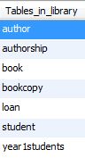

Objectives
In this lab, we will look at Sub Queries and Views.
Subqueries
A subquery is where we have a complete SELECT statement embedded within another SELECT statement. The results of this inner SELECT statement (or subselect) are used in the outer statement to help determine the contents of the final result.
A subquery can be used in the WHERE and HAVING clauses of an outer SELECT statement.
Using a subquery with equality
List the bookcopy Ids for the book with title JavaScript.
SELECT copyId
FROM bookcopy
WHERE isbn =
(SELECT isbn
FROM book
WHERE title ='JavaScript');The inner SELECT statement finds the ISBN that corresponds to the book with title JavaScript. Having obtained this ISBN, the outer SELECCT statement
then retrieves the copyIds for the book. In other words, the inner SELECT returns a result table containing a single value 123675432. The outer SELECT becomes:
SELECT copyId
FROM bookcopy
WHERE isbn = '123675432';If we want to count the copyIds rather than display them, we could modify the above as follows:
SELECT count(copyId) as 'Number of copies'
FROM bookcopy
WHERE isbn =
(SELECT isbn
FROM book
WHERE title ='JavaScript');Exercise
Using a subquery, return the number of books out on loan for student (20038967).
Using a subquery with an aggregate function
Example One
List the title and price for the most expensive book.
SELECT title, price
FROM book
WHERE price =
(SELECT max(price)
FROM book);The inner SELECT returns the maximum priced book price and then this value is used in the WHERE clause (WHERE price = ).
Example Two
List the title and price of any book that has the same price as the JavaScript book.
SELECT title, price
FROM book
WHERE price =
(SELECT price
FROM book
WHERE title = 'JavaScript');Exercise
Using a subquery, return the title and price of the least expensive book.
Using a subquery, return the title and price of all books whose price is greater than the average book price.

Using a subquery, return the title and price difference of all books whose price is greater than the average book price.
Hint: Round the average price when calculating the price difference.
Use of IN
List the students (by Name), who have a loan (studentId value in the Loan table).
SELECT concat(fname, ' ', lname) as Name
FROM student
WHERE studentid IN
(SELECT studentId
FROM loan);The inner SELECT will return more than one record (row), and so we cannot use the equality condition in the outer query. Instead we use the IN keyword.
Exercise
Using a subquery, return the authors by name who have a book in our library.
Using a subquery, return the authors by name who do not have a book in our library.
Use of ANY and ALL
The keywords ANY and ALL may be used with subqueries that produce a single column of numbers.
ALL
If the subquery is preceded by the keyword ALL, the condition will be true only if it is satisfied by all values produced by the subquery.
Example One
List the title and price of the book whose price is greater than or equal to the price of all books (i.e. the most expensive book).
SELECT title, price
FROM book
WHERE price >= ALL
(SELECT price
FROM book);Example Two
List all book titles whose price is greater than the price all Computing books.
SELECT title, category, price
FROM book
WHERE price > ALL
(SELECT price
FROM book
WHERE category = 'Computing');ANY
If the subquery is preceded by the keyword ANY, the condition will be true if it is satisfied by any (one or more) values produced by the subquery.
List all book titles whose price is greater than the price of at least one Computing book.
SELECT title, category, price
FROM book
WHERE price > ANY
(SELECT price
FROM book
WHERE category = 'Computing');Views
What is a View
A view is the dynamic result of querying a base relation(table) to produce another relation (result-set). A view is a virtual relation that does not necessarily exist in the database but can be produced upon request by a particular user, at the time of request.
To the user, a view appears just like a real table, with a set of named columns and rows of data. However, unlike a base table, a view does not necessarily exist in the database as a stored set of data values. Instead, a view is defined as a query on one or more base tables or views. The DBMS stores the definition of the view in the database. When the DBMS encounters a reference to a view, one approach is to look up this definition and translate the request into an equivalent request against the source tables of the view and perform the equivalent request.
Creating a View
The format of the CREATE VIEW statement is:
CREATE [OR REPLACE] VIEW ViewName [(newColumnName[,...])]
AS subselect [WITH [CASCADED|LOCAL] CHECK OPTION]Creating MySQL view example
The following simple VIEW selects a subset of fields from the Student table for all year 1 students:
CREATE OR REPLACE VIEW year1students AS
SELECT studentid, fname, lname, street, town, county, year
FROM student
WHERE year = 1;If you use the SHOW TABLES command to view all tables in the library database, we also see the year1students view is showing up in the list.

This is because the views and tables share the same namespace. To know which object is view or table, you use the SHOW FULL TABLES command.
If we want to query the year1students view, you just need to execute a simple SELECT statement against the year1student view as follows:
SELECT * FROM year1students;Your view can be based on any type of SELECT, for example using joins, subqueries or the view can be based on another view.
CREATE VIEW overduedetails AS
SELECT concat(fname,' ',lname) Name, title, dateOut
FROM bookcopy JOIN book
ON bookcopy.isbn = book.isbn
JOIN loan
ON bookcopy.copyId = loan.copyId
JOIN student
ON student.studentId = loan.studentId
WHERE dateBack IS NULL;Exercise
For this exercise, load the movies database and remember to enter the command:
USE MOVIES;- Create a view called
FilmReviewDetails, which returns the film title, released year, reviewer name, and number of stars for all films reviewed.
Managing Views
Showing view definition
MySQL provides the SHOW CREATE VIEW statement that displays the view's definition.
For example:
SHOW CREATE VIEW overduedetails;Modifying Views
Modifying view using CREATE OR REPLACE VIEW statement
You can use CREATE OR REPLACE VIEW statement to either create or replace an existing view. If a view already exists, MySQL simply modifies the view.
In case the view does not exist, MySQL creates a new view.
CREATE OR REPLACE view year1students AS
SELECT studentid, fname, lname, street, town, county, year
FROM student
WHERE year = 1
AND county = 'Waterford';Modifying views using ALTER VIEW statement
Once a view is created, you can modify it using the ALTER VIEW statement.
The syntax of the ALTER VIEW statement is similar to the CREATE VIEW statement except that the CREATE keyword is replaced by the ALTER keyword.
ALTER VIEW year1students AS
SELECT studentid, fname, lname, street, town, county, year
FROM student
WHERE year = 1
AND county = 'Waterford';Removing views
Once a view created, you can remove it using the DROP VIEW statement. The following illustrates the syntax of the DROP VIEW statement:
For example:
DROP VIEW year1students;MySQL updatable views
In MySQL, views are not only query-able but also updatable. It means that you can use the INSERT or UPDATE statement to insert or update rows of the
base table through the updatable view. In addition, you can use DELETE statement to remove rows of the underlying table through the view.
However, to create an updatable view, the SELECT statement that defines the view must not contain any of the following elements:
- Aggregate functions such as MIN, MAX, SUM, AVG, COUNT, etc.
- DISTINCT
- GROUP BY clause.
- HAVING clause.
- Outer join.
- Subquery in the SELECT clause or in the WHERE clause that refers to the table appeared in the FROM clause.
Updating rows through the view
Let's create an updatable view.
CREATE OR REPLACE view pricedetails AS
SELECT isbn, title, category, price
FROM book
WHERE category = 'computing';Next, we can query data from the pricedetails view using the following statement:
SELECT * FROM pricedetails;We can update the price of one, some or all of these books using the UPDATE statement.
For example, update the price by 10%:
UPDATE pricedetails
SET price = price * 1.10;Next, we can check whether the prices have increased:
SELECT * FROM pricedetails;You can also confirm the price change by querying the base table:
SELECT * FROM book;Checking updatable view information
You can check if a view in a database in updatable by querying the is_updatable column from the views table in the information_schema database.
The following query gets all views from the library database and shows which views are updatable.
SELECT table_name, is_updatable
FROM information_schema.views
WHERE table_schema = 'library';Removing rows through the view
First, we create a table named journal, insert some rows into the journal table, and create a view that contains only scienific journals.
CREATE TABLE journal (
ISSN varchar(15) not null,
title varchar(50) not null,
category varchar(30),
primary key (ISSN)
); -- create table
INSERT INTO journal
VALUES ('9999-8888', 'Computer Bulletin', 'Science'), ('7861-9932', 'Academy of Management Journal', 'Business'), ('2314-7788', 'Irish Chemical News', 'Science');
--insert new records
CREATE OR REPLACE view sciencejournals AS
SELECT * from journal
WHERE category = 'Science'; -- create a view based on Science journals
SELECT * FROM sciencejournals; -- query the viewDelete one of the records from the view (issn: 9999-8888):
DELETE FROM sciencejournals
WHERE issn = '9999-8888';Next, we can check whether the record is deleted:
SELECT * FROM sciencejournals;You can also confirm the record is gone from the base table:
SELECT * FROMjournal;Introduction to WITH CHECK OPTION clause
Sometimes, you create a view to reveal the partial data of a table only. However, a simple view is updatable therefore it is possible to update data
which is not visible through the view. This update makes the view inconsistent. To ensure the consistency of the view,
you use the WITH CHECK OPTION clause when you create or modify the view.
The WITH CHECK OPTION clause is an optional part of the CREATE VIEW statement. The WITH CHECK OPTION clause prevents you from updating or inserting
rows that are not visible through the view. In other words, whenever you update or insert a row of the base table through a view,
MySQL ensures that the insert or update operation is conformed with the definition of the view.
The following illustrates the syntax of the WITH CHECK OPTION clause.
CREATE OR REPLACE VIEW view_name
AS
select_statement
WITH CHECK OPTION;Notice that you put the semicolon (;) at the end of the WITH CHECK OPTION clause, not at the end of the SELECT statement defined the view.
We will now look at an existing view and see how an update makes the view inconsistent and we will then modify the view.
Our original year1students view is defined as follows:
CREATE OR REPLACE VIEW year1students AS
SELECT studentid, fname, lname, street, town, county, year
FROM student
WHERE year = 1;Now, we insert a row into the student table through the year1students view as follows:
INSERT INTO year1students VALUES
('20081336', 'Sam', 'Brown', 'Tintine', 'The Rower', 'Kilkenny',2);Notice that the newly created student is not visible through the year1students view because his year is 2, which is not 1.
You can verify that the record has been inserted by using the following SELECT statement.
SELECT * FROM student;To ensure the consistency of a view so that users only can display or update data that visible through the view, you use the WITH CHECK OPTION
when you create or modify the view.
Let's modify the view to include the WITH CHECK OPTION.
CREATE OR REPLACE VIEW year1students AS
SELECT studentid, fname, lname, street, town, county, year
FROM student
WHERE year = 1
WITH CHECK OPTION;Now, we insert a row into the student table through the year1students view as follows:
INSERT INTO year1students VALUES
('20091010', 'Phil', 'Smith', 'Rose Inn', 'Dungarvan', 'Waterford',3);This time, MySQL rejects the insert and issues the following error message:
Finally, we insert a student whose year is 1 into the student table through the year1students view to see if MySQL allows us to do it.
INSERT INTO year1students VALUES
('20091010', 'Phil', 'Smith', 'Rose Inn', 'Dungarvan', 'Waterford',1);This time there is no error, you can check it by entering the command:
SELECT * FROM year1students;Exercise
For this exercise, load the movies database and remember to enter the command:
USE MOVIES;- Create a view called
modernfilmswhich returns the film id, title, released year and director for all films released since 1980. - Try to insert the following records:
INSERT INTO modernfilms VALUES (109, 'The Kings Speech', 2010, 'Tom Hooper');
INSERT INTO modernfilms VALUES (110, 'Lawrence of Arabia', 1962, 'David Lean');Note: The second record should not be accepted by MySQL.